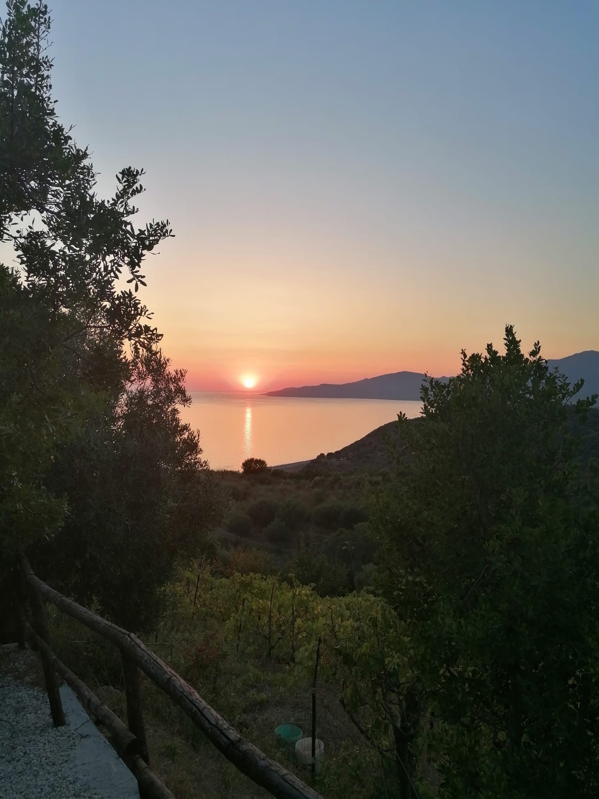
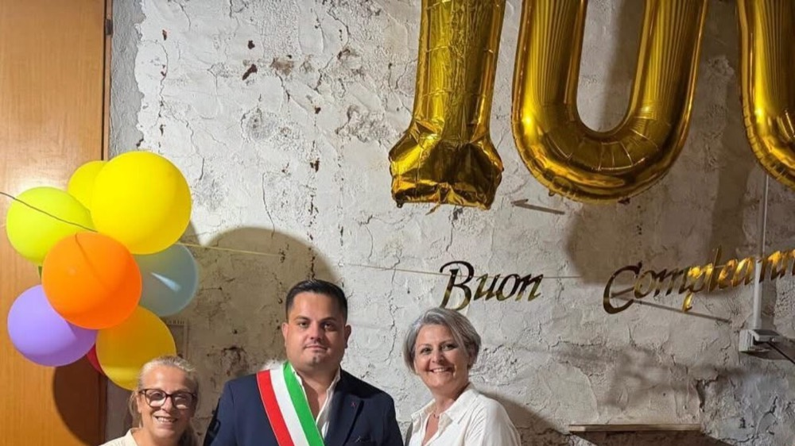

News ed eventi
Le notizie che raccontano Ascea, le sue frazioni e località, gli eventi e le esperienze che si possono vivere sul territorio.

Esterno
Video
[Titolo del reel da definire]
Facebook Leggi l’articolo completo
Esterno
News
Nel Cilento due centenari festeggiati in pochi giorni
ANSA Leggi l’articolo completo Esterno
News